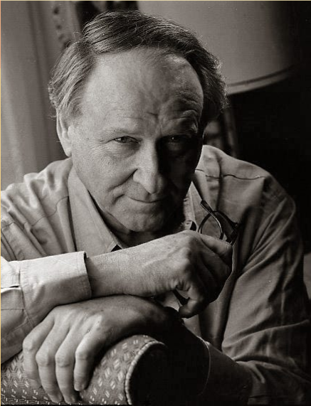
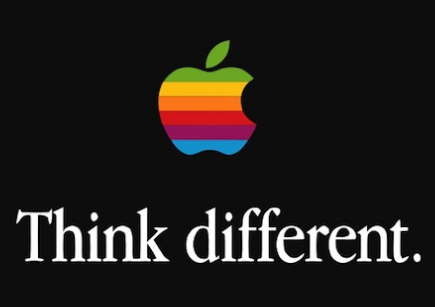

Un'immagine vale 1000 parole?
La frase "Un'immagine vale più di 1000 parole" ha più storie
Una versione attribuisce il merito a Frederick R. Barnard, che ha attribuito la frase a un antico proverbio cinese, tradotto in "Ascoltare qualcosa cento volte non è meglio che vederlo una volta". Ma sappiamo che la frase è in realtà di origine americana, ed iniziò ad essere usata nella stampa statunitense a partire dagli anni '20 circa. La frase "un'immagine vale più di mille parole” suggerisce che un'immagine può sostituire l'impatto delle parole. Un'affermazione che contraddice la nostra esperienza quotidiana. Le parole e le immagini comunicano in modi distinti e hanno le loro capacità uniche di trasmettere sfumature, dettagli ed emozioni.
"Think Different"
Prendiamo come esempio la campagna "Think Different" di Apple, una delle più iconiche della storia. Le immagini semplici rendono lo slogan più memorabile e danno forza di resistenza. L'annuncio utilizza parole e immagini insieme. L'immagine dà potere al testo. Il testo dà potere all'immagine.
Come raggiungere l'equilibrio
1. Dai priorità alle informazioni 2. Scegli immagini che raccontino una storia 3. Fai attenzione quando aggiungi un'immagine dopo l'altra 4. Prova per avere un'idea dell'impatto delle immagini 5. Chiedi agli altri cosa pensano delle tue immagini